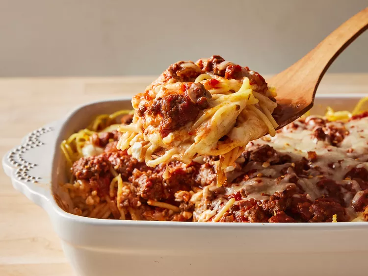

Baked Spaghetti

Desciption
You'll find a detailed ingredient list and step-by-step instructions in the recipe below, but let's go over the basics.
Ingredients
- Noodles
- Beef and Onion
- Sauce
- Salt
- Eggs
- Cheeses
- Butter
Steps
- Boil and drain the spaghetti.
- Cook the beef and onion together, then drain off the excess oil.
- Add the sauce and salt. Whisk the eggs, Parmesan, and butter in a separate bowl.
- Toss the spaghetti in the Parmesan mixture.
- Layer the ingredients in a prepared baking dish according to the detailed recipe.
- Cover and bake for 40 minutes. Sprinkle with mozzarella, then keep baking until the cheese is melted.
Home